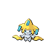

Jirachi is a small, white, humanoid Pokémon. It has short, stubby legs and comparatively longer arms. There are flaps on the underside of its arms, which give the impression of long sleeves. On its belly is a curved seam, which conceals a third, yellow eye with a cyan pupil, known as its "true eye". Additionally, Jirachi has a normal pair of ovalish eyes on its face, with small, blue triangular markings underneath. On its head is a large, yellow structure with three points extending outward: one from the top and one on either side. On each point is a teal tag, known as a "wish tag". A rounded extension hangs from either side of the yellow structure, framing Jirachi's face. Two yellow streamers flow from Jirachi's back, resembling comet tails.
Jirachi hibernates for most of its life, awakening for seven days every thousand years. It can be also awakened if sung to by a voice of purity. While it sleeps, a tough, crystalline shell envelops its body to protect it from enemies
